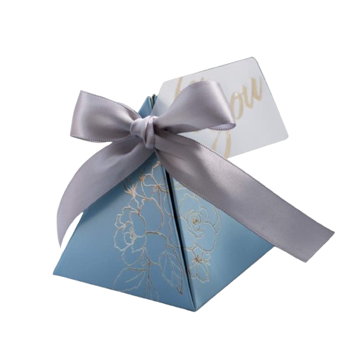
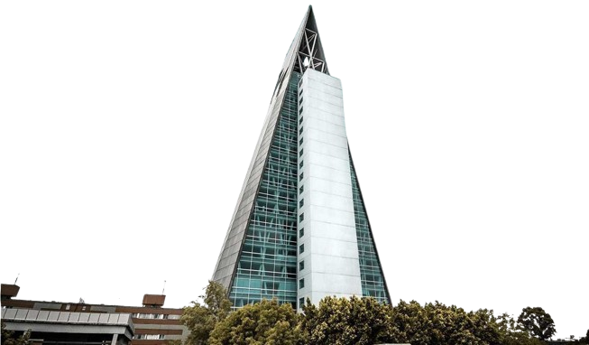
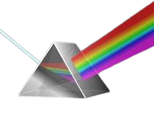
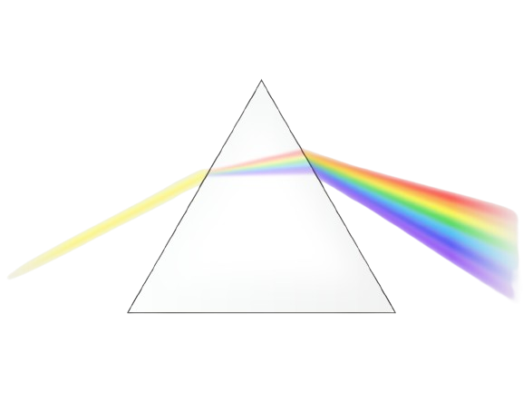
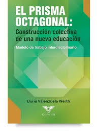
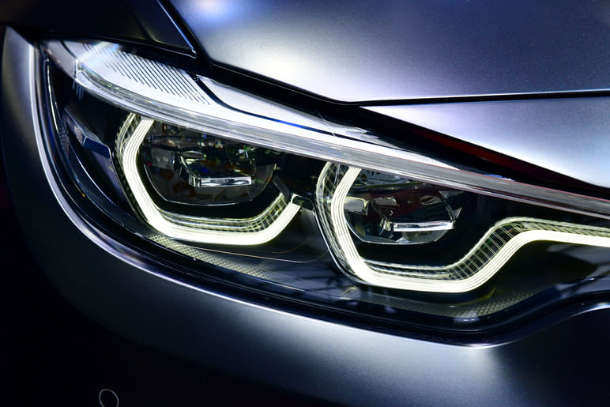

Muchas cajas y envases tienen forma de prisma. Esto se debe a que los prismas son formas eficientes para contener y almacenar objetos. Por ejemplo, las cajas de cartón que usamos para empacar y transportar productos suelen ser prismas rectangulares.
Los prismas también se utilizan en la arquitectura. Muchos edificios tienen formas prismáticas, ya sea en su totalidad o en partes específicas de su diseño. Por ejemplo, las ventanas de un edificio a menudo tienen forma de prisma rectangular.
Los prismas se utilizan en la óptica para descomponer la luz en sus colores componentes, como en un prisma de vidrio triangular que dispersa la luz en un arco iris. También se utilizan en cámaras, telescopios y microscopios para enfocar y dirigir la luz.
Los prismas se utilizan en diseño gráfico y en geometría para crear efectos visuales. Por ejemplo, la representación de objetos en perspectiva a menudo implica el uso de prismas para crear la ilusión de profundidad en una imagen bidimensional.
Los maestros pueden usar modelos de prismas para ayudar a los estudiantes a comprender conceptos como área, volumen, ángulos y refracción de la luz. Los prismas también se utilizan en experimentos de laboratorio para demostrar fenómenos ópticos y propiedades geométricas.
En la fabricación y diseño de vehículos, los prismas se utilizan en la construcción de componentes ópticos, como espejos retrovisores, faros y sistemas de iluminación. También se emplean en la ingeniería de sistemas de visión, como cámaras y sensores, que son fundamentales para la seguridad y la navegación en vehículos autónomos y aeronaves.
